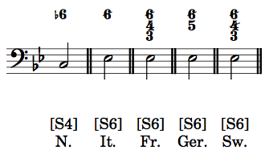

Chromatically altered subdominant chords
The most common chromatically altered subdominant chords (aside from the applied dominant of V) are the Neapolitan chord and the various augmented-sixth chords.

Neapolitan chord
The Neapolitan chord contains lowered scale-degree 2, along with scale-degree 4, and lowered scale-degree 6: ra, fa, and le. It is a major triad, and it usually appears with fa in the bass (first-inversion), which is also doubled in a four-voice texture. It's designation is N6.
In a Roman numeral analysis, N6 substitutes for a Roman numeral (that is, it is not a flat-II chord). In a functional bass analysis, N. is placed below the functional designation of [S4].
Augmented-sixth chords
Augmented-sixth chords are so named because of the augmented sixth that occurs between le and fi, the two scale-degrees that are present in every augmented-sixth chord. The other pitch(es) in the chord determine which kind of augmented-sixth chord is present.
The Italian augmented-sixth chord is the simplest augmented-sixth chord, with only three members: le, do, and fi. Le is typically the bass note, and in a four-voice texture, do is typically the pitch that is doubled. When le occurs in the bass, the functional designation is [S6]. Under that functional bass symbol, we also label the chord It. In a Roman numeral analysis, just It. will do. The figured bass is a simple slashed "6."
The French augmented-sixth chord has four members: le, do, re, and fi. As in the Italian sixth, le is typically the bass note, and the functional designation is [S6]. Under that functional bass symbol, we label the chord Fr. In a Roman numeral analysis, just Fr. will do. The figured bass is a slashed "6" with a "4" and a "3."
The German augmented-sixth chord has four members: le, do, me, and fi. As in the other augmented sixth chords, le is typically the bass note, and the functional designation is [S6]. Under that functional bass symbol, we label the chord Ger. In a Roman numeral analysis, just Ger. will do. The figured bass is a slashed "6" with a "5." The German sixth is almost always followed by a cadential 6/4 chord.
The Swiss augmented-sixth chord has four members: le, do, ri, and fi. This chord is named "Swiss" because it sounds German but is spelled like the French. (ri in place of me) (Switzerland is a mixture of German-, French-, Italian-, and Romansch-based languages and cultures, with German and French being the largest.) Le is typically the bass note, and the functional designation is [S6]. Under that functional bass symbol, we label the chord Sw. In a Roman numeral analysis, just Sw. will do. The figured bass is a slashed "6" with a slashed "4" and a "3."